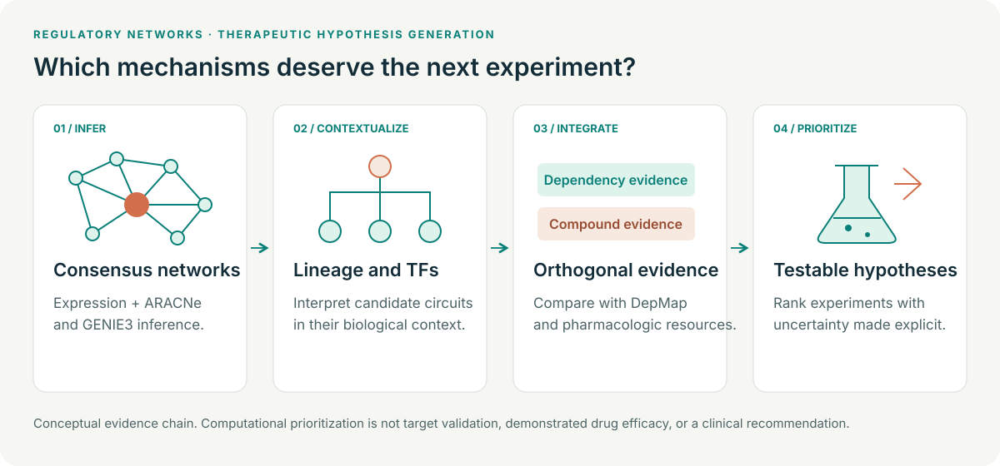

Original portfolio diagram. Source and license.
The biological question
Which regulatory programs sustain pediatric tumor identities, and which regulators warrant experimental testing as candidate vulnerabilities? Expression alone cannot answer this question: a highly expressed gene may be a marker, a generic essential gene, or a context-dependent dependency.
My contribution
I construct and interpret consensus regulatory networks across pediatric solid tumors and integrate these networks with functional-dependency and pharmacologic resources. My role connects computational analysis with the evidence needed to prioritize mechanisms and models for further investigation.
Analysis design
Complementary ARACNe-AP and GENIE3 network inference supports consensus regulatory hypotheses. Transcription-factor and regulon evidence is interpreted with tumor-specific expression, DepMap dependencies, and resources including PRISM, ChEMBL, DrugBank, DrugCentral, and MIPE. Lineage specificity, model relevance, proliferation, generic essentiality, and conflicting evidence all affect interpretation.
Research outputs
Outputs include ranked regulator–program hypotheses, supporting evidence from different data types, and model comparisons. Traceable evidence summaries make it possible to ask why a candidate should advance, what contradicts the hypothesis, and which result would justify stopping its pursuit.
Interpretation and next steps
This is computational target nomination. Experimental perturbation and treatment-response studies are subsequent validation steps, to be designed with relevant investigators. I do not equate analysis of dependency-screen data with personally executing the screens.
Relevance to therapeutic discovery
The value is a defensible prioritization process: turn large genomic and functional datasets into focused questions that experimental teams can test, while making uncertainty and alternative explanations visible.